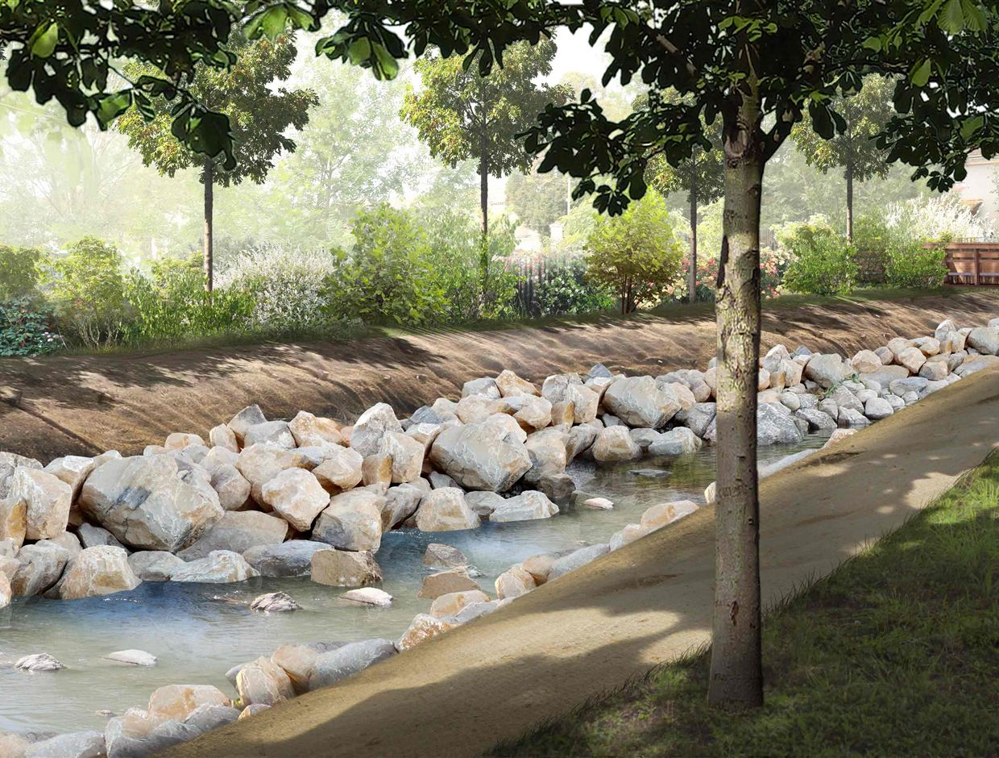
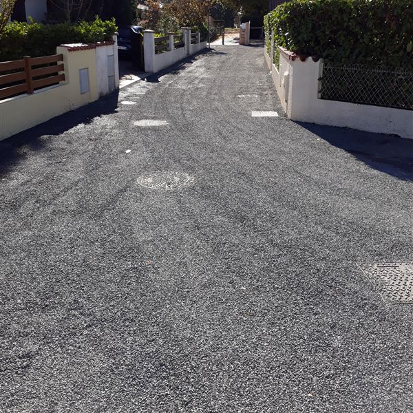
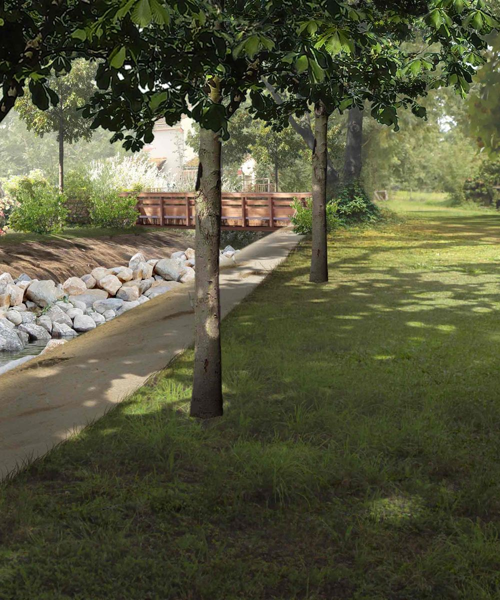

Maîtriser les eaux pluviales
à l’échelle du territoire
Modéliser la pluie et le ruissellement pour concevoir des ouvrages adaptés, en lien avec les services d’urbanisme et les maîtres d’ouvrage.
Parler de votre projet


Comprendre le ruissellement pour mieux l’accueillir
Collecte · Traitement · Évacuation
Avant de concevoir les ouvrages d’hydraulique urbaine, nous modélisons la pluviométrie, l’imperméabilisation et le ruissellement du bassin versant, en concertation avec les services d’urbanisme et les maîtres d’ouvrage.
-
Modélisation hydraulique
Analyse du bassin versant et simulation des débits pour dimensionner au plus juste.
-
Collecte, traitement et évacuation
Réseaux et ouvrages de gestion des eaux pluviales urbaines et industrielles.
-
Intégration au projet urbain
Perméabilité des sols et gestion de l’eau pensées avec les aménagements et le paysage.

Notre démarche en 3 temps
-
01
Comprendre le bassin versant
Pluie, sols, imperméabilisation, écoulements existants : un diagnostic complet du territoire.
-
02
Modéliser et dimensionner
Simulation du ruissellement pour définir des ouvrages adaptés, ni sous- ni surdimensionnés.
-
03
Intégrer au projet
Des solutions coordonnées avec l’urbanisme, la voirie et le paysage.
Une même équipe, du diagnostic au chantier
Dans chacun de ces domaines, nous intervenons en études, en maîtrise d’œuvre ou en assistance à maîtrise d’ouvrage, pour les collectivités comme pour les entreprises privées.
-

Études
- Études de faisabilité
- Diagnostics & schémas directeurs
- Études hydrauliques et environnementales
- Dossiers réglementaires
-

Maîtrise d’œuvre
- Expertise
- Conception : EP/AP/PRO
- Réalisation : ACT/VISA/DET/AOR
- Réception des travaux
-

Assistance à maîtrise d’ouvrage
- Aide à la décision
- Suivi administratif
- Coordination des parties prenantes
- Appui technique et réglementaire